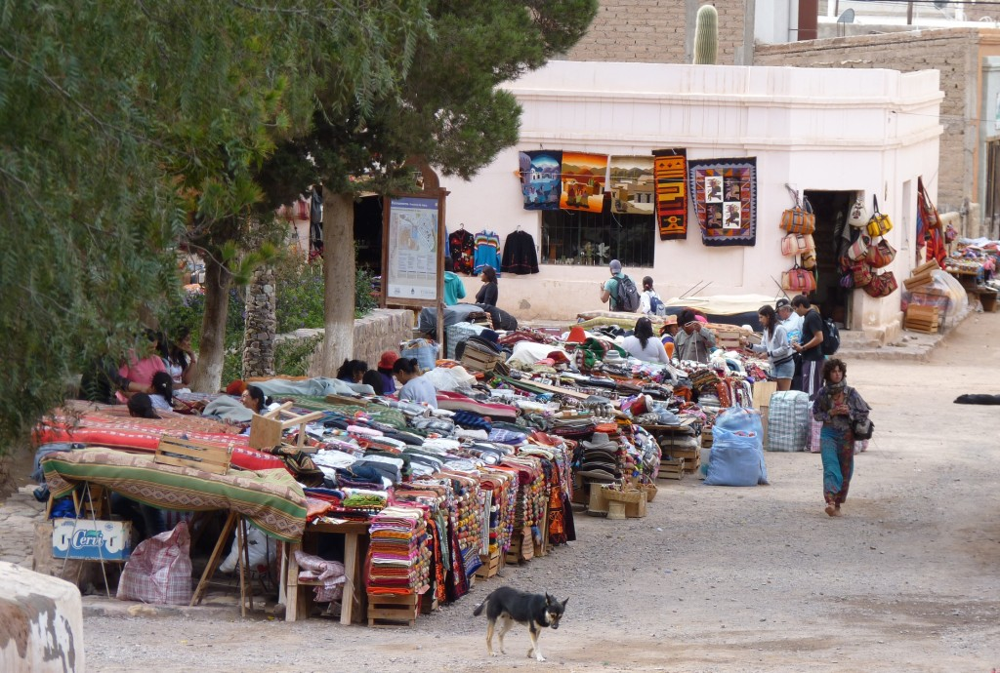
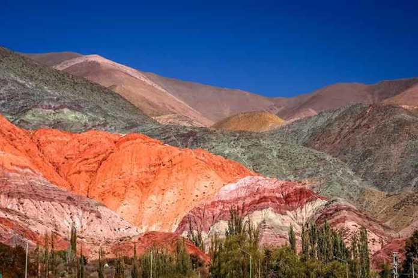

Purmamarca
Purmamarca es un pequeño pueblo ubicado en la provincia de Jujuy, en el noroeste de Argentina. Es conocido por su impresionante paisaje circundante, que incluye la famosa montaña de los Siete Colores, una maravilla natural formada por estratos sedimentarios de diferentes tonalidades.

El pueblo se encuentra en la Quebrada de Humahuaca, un valle estrecho y árido que ha sido declarado Patrimonio de la Humanidad por la UNESCO debido a su rica historia cultural y su significado arqueológico.

Purmamarca es un destino turístico popular debido a su belleza natural y su autenticidad cultural. Los visitantes pueden explorar el mercado artesanal local, donde se venden tejidos y artesanías tradicionales, o realizar caminatas por los senderos que ofrecen vistas panorámicas del paisaje. Además, el pueblo sirve como punto de partida para excursiones a otras atracciones de la región, como las Salinas Grandes, un vasto salar situado a una mayor altitud.
La arquitectura del pueblo refleja la influencia de las culturas indígenas y coloniales, con edificios construidos en adobe y calles empedradas que añaden al encanto del lugar. Purmamarca es también un centro de celebraciones culturales y festivales, que atraen a visitantes de todo el mundo para experimentar la música, la danza y las tradiciones de la región.
A pesar de su popularidad, Purmamarca ha mantenido su atmósfera tranquila y su entorno natural intacto, lo que lo convierte en un refugio perfecto para aquellos que buscan escapar del bullicio de la vida moderna y sumergirse en la serenidad de la naturaleza y la cultura.